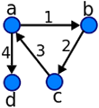
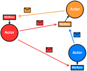

GPars
About
News
Events
Getting Started
Docs
Download
The Groovy Concurrency and Parallelism Framework
Dataflows

A safe and robust concurrency model enabling completely deterministic programs with no race conditions or live-locks
Actors

Independent objects exchanging messages with no mutable shared state, avoiding deadlocks and starvation
CSPs
Communicating Sequential Processes, offering deterministic behavior and the ability to compose and reuse components
Agents
Thread-safe, non-blocking implementation that safeguards mutable values by restricting modifications to a single managed thread
Parallel Collections
Transparently parallel collections, providing the ability to split methods like
each()
and
findAll()
across processorss
Asynchronous Functions
Long-running tasks processed in the background, with results collected as needed — combine sync and async closures in a single calculation
Fork/Join
Leverages the power of JSR-166y, but hides the complexities of dealing with threads, pools, and syncronization barriers